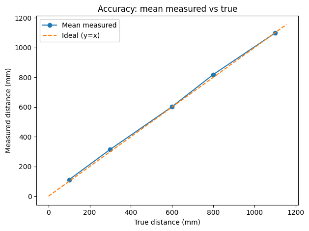
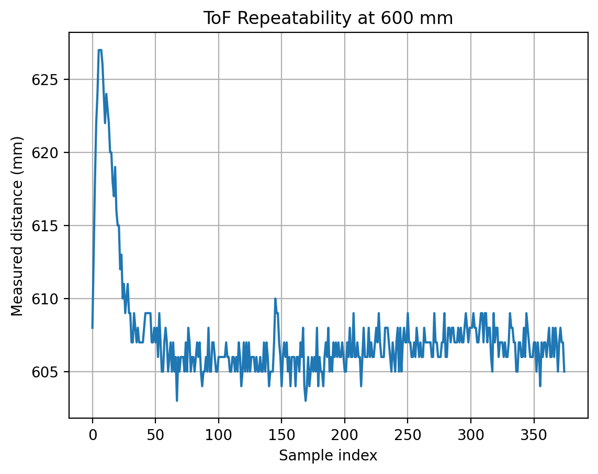
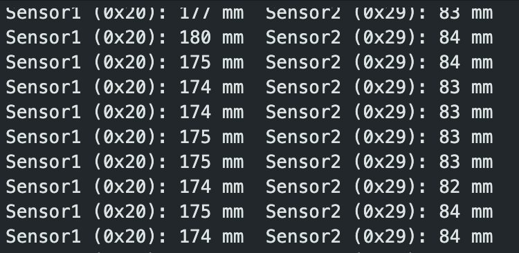
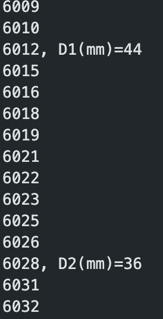
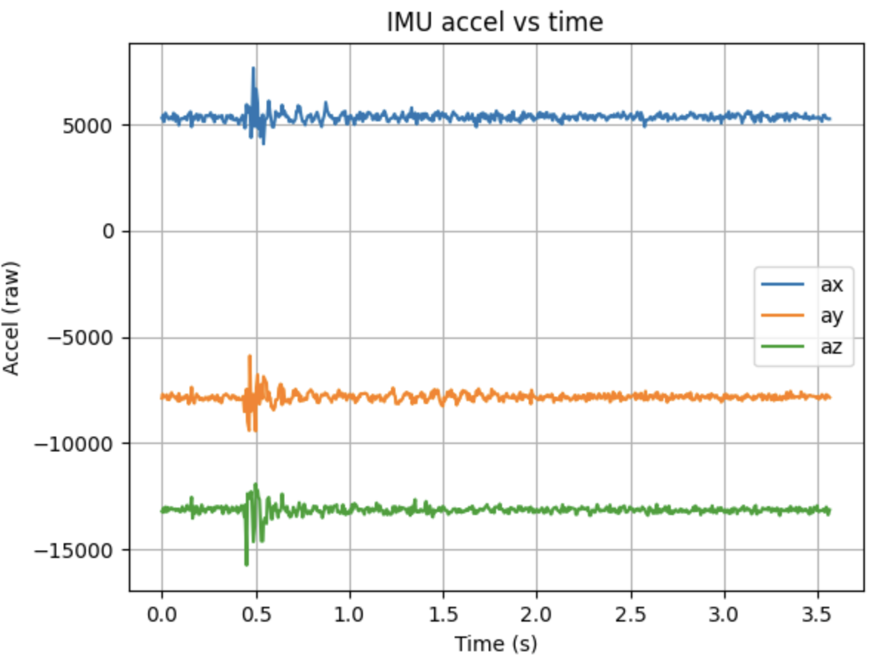

Lab 3: Time of Flight Sensors
Objective
The goal of this lab is to add distance sensors to the robot and collect fast, reliable measurements so it can detect obstacles and navigate safely.
Pre Lab
To detect obstacles in multiple directions, I will use two VL53L1X ToF sensors on the robot. Since both sensors power up with the same default I2C address (0x29), they cannot be used at the same time without changing one of their addresses. To solve this, I wired the XSHUT pin of one sensor to Artemis GPIO pin A2. During startup, the Artemis pulls this pin LOW to turn that sensor off, initializes the other sensor at 0x29, changes its address to 0x20, and then turns the second sensor back on. This will allow both sensors to run at the same time on the same I2C bus.
For placement, one sensor will be mounted at the front of the robot to detect obstacles directly ahead, while the second sensor will be mounted on the side to monitor nearby walls and objects when turning or navigating tight spaces. This setup provides better awareness than pointing both sensors forward.

The picture above shows the wiring diagram. Both sensors share power, ground, SDA, and SCL through the Qwiic multipoint hub. I used detachable Qwiic connections for the I2C lines to make the sensors easy to remove, while the XSHUT control wire was soldered to A2 for a secure connection. Wire lengths were planned to reach the final mounting positions without tension as well as avoid moving parts and reduce strain on the solder joints.
Tasks
1. Battery
To power the Artemis without a USB connection, I soldered a JST connector to a 3.7 V Li-Po battery and used it as the primary power source. The battery wires were cut and soldered one at a time, and heat shrink tubing was applied to insulate the exposed connections and provide strain relief. But when connecting the JST lead to the Artemis power port, I noticed that the polarity labeling on the board was reversed relative to the battery lead orientation. Then I swapped the red and black wires and resoldered the connection.

To confirm that the Artemis was functioning correctly while powered only by the battery, I connected to the device over Bluetooth and used the ECHO command from Lab 1.

2. First TOF setup
To set up the first ToF sensor, I connected the VL53L1X breakout board to the Qwiic multipoint hub using a modified Qwiic cable. One end of the cable was cut and the wires were soldered directly to the sensor pads. The wire colors were matched to the I2C connections as follows: • Red → VIN (power) • Black → GND • Blue → SDA • Yellow → SCL

After wiring the first ToF sensor, I scanned the I2C bus using the Example05_wire_I2C example from the Apollo3 Wire library. The scan detected a device at address 0x29, shows that the sensor was properly connected and communicating. Although the VL53L1X datasheet lists the default address as 0x52, this value includes the read/write bit. The actual 7-bit I2C device address is obtained by shifting 0x52 one bit to the right, 0x52 = 01010010, and the 7-bit address for 0x29 is 00101001. Therefore, the detected address of 0x29 matches the expected default address of the sensor.

3. TOF Testing
The VL53L1X TOF provides three ranging modes that trade off measurement range, speed, and stability. Short mode supports distances up to approximately 1.3 meters and provides the fastest updates and strong performance at close range, although readings may become unreliable near its maximum range. Medium mode extends the range to roughly 3 meters and balances speed and stability, but this mode is only available when using the Pololu VL53L1X library and was therefore not used in this lab. Long mode supports distances up to approximately 4 meters and is better suited for longer-range detection, but it typically produces slower updates and can be more sensitive to lighting conditions and surface reflectivity. For a mobile robot that must react quickly to nearby obstacles, I chose short mode because of its faster update rate.
The sensor was tested using the SparkFun Example1_ReadDistance example, and measurements were collected at 10 mm, 30 mm, 60 mm, 80 mm, 110 mm. The plot below shows mean measured distance closely followed the true distance across the tested range.

To evaluate repeatability, I held the sensor at a fixed distance of 600 mm while recording a sequence of measurements. The plot below shows that most readings cluster tightly around approximately 606–608 mm. we can see a small number of higher outliers, likely due to measurement noise.

The time series plot below shows that after a brief initial transient, the readings stabilize and fluctuate only slightly, demonstrating good repeatability over time.

Ranging time describes how often the sensor produces a new measurement. During testing, I used a start–stop ranging cycle produced readings approximately every 50 ms. The update rate decreased to about 100 ms when the sensor was left running continuously without calling stopRanging(), According to the datasheet, this occurs because the VL53L1X uses an internal timing budget that increases measurement stability at the cost of speed when operating continuously. In this setup, the primary limiting factor was the sensor’s internal ranging time rather than the loop execution speed.
3. Parallel TOF setup
To run two VL53L1X sensors on the same I2C bus, I had to resolve the address conflict since both sensors power up with the default address 0x29. I wired the XSHUT pin of one sensor to Artemis pin 2 so I could power it down during startup, change the address of the other sensor, and then bring the second sensor back online. This allowed sensor 1 to be reassigned to 0x20 while sensor 2 remained at 0x29, so both sensors could operate simultaneously.

The core address reassignment logic in setup() is shown below.
// setup(): assign unique I2C addresses using XSHUT
#define SHUTDOWN_PIN 2
#define SENSOR1_ADDRESS_NEW 0x20
pinMode(SHUTDOWN_PIN, OUTPUT);
digitalWrite(SHUTDOWN_PIN, LOW); // hold Sensor 2 off
delay(50);
distanceSensor1.begin(); // only Sensor 1 is on bus at 0x29
distanceSensor1.setI2CAddress(SENSOR1_ADDRESS_NEW); // move to 0x20
delay(10);
digitalWrite(SHUTDOWN_PIN, HIGH); // enable Sensor 2 (still at 0x29)
delay(50);
distanceSensor2.begin();After both sensors were initialized, I confirmed parallel operation by reading and printing both sensors in the same loop iteration. The key ranging logic is shown below.
// loop(): read both sensors and print in one line
int d1 = readDistance(distanceSensor1);
int d2 = readDistance(distanceSensor2);
Serial.print("Sensor1 (0x20): ");
Serial.print(d1);
Serial.print(" mm\tSensor2 (0x29): ");
Serial.print(d2);
Serial.println(" mm");
4. TOF Sensors speed
In future labs, the robot must perform multiple tasks simultaneously, so the code cannot block while waiting for a sensor measurement to finish. The original approach used a blocking loop that waited until the ToF sensor completed a measurement, which prevented the processor from executing other tasks. To improve performance, I configured both VL53L1X sensors to run continuously and used the non-blocking checkForDataReady() function to determine when new measurements were available. The loop was designed to print the Artemis clock (millis()) continuously and only print distance data when a new measurement was ready. This allows the processor to continue executing the loop without waiting for the sensor.
void loop() {
unsigned long t = millis();
Serial.print(t);
if (distanceSensor1.checkForDataReady()) {
int d1 = distanceSensor1.getDistance();
distanceSensor1.clearInterrupt();
Serial.print(", D1(mm)=");
Serial.print(d1);
}
if (distanceSensor2.checkForDataReady()) {
int d2 = distanceSensor2.getDistance();
distanceSensor2.clearInterrupt();
Serial.print(", D2(mm)=");
Serial.print(d2);
}
Serial.println();
}
From the timestamp output above, consecutive loop iterations increased by approximately 1–2 ms, with occasional larger intervals when additional distance data was printed. This corresponds to a loop frequency of approximately 600 Hz. The loop speed is primarily limited by Serial communication bandwidth at 115200 baud, since transmitting text takes significantly longer than checking the sensor status. The VL53L1X sensors generate new measurements only every few tens of milliseconds, so distance values appear intermittently even though the loop executes much faster.
5. Time-Stamped ToF + IMU Logging Over BLE
To enable untethered data collection, I modified my Lab 1 BLE framework so the Artemis could record time-stamped data from both ToF sensors and the IMU for a fixed period and then transmit the stored samples to my computer over Bluetooth. When Python sends a recording command, the Artemis clears its buffer, starts a timer using micros(), and begins logging data. During recording, the program continuously updates the latest distance readings from both ToF sensors while also sampling the IMU whenever new data is available. Each stored sample includes the elapsed time since recording began, the two distance measurements, and the IMU acceleration values.
After the recording window ends, Python sends a dump command. The Artemis then streams each stored sample over BLE and finishes with a “DONE” message to indicate that transmission is complete. On the computer side, the Python script collects the incoming data, converts the timestamps from microseconds to seconds, and plots the measurements versus time.


6. Infrared trasmission Discussion
Many distance sensors rely on infrared light but use different measurement methods. Traditional IR proximity sensors estimate distance based on reflected light intensity or triangulation angle. Because they depend on reflected signal strength, their accuracy is strongly affected by surface color, reflectivity, and ambient lighting. They are inexpensive and simple but can produce unreliable measurements on dark or highly reflective surfaces. Time-of-Flight (ToF) sensors such as the VL53L1X measure distance by emitting a laser pulse and timing how long it takes to return. This timing-based method makes ToF sensors more consistent and less sensitive to lighting conditions. They provide accurate measurements in a compact, low-power package, though performance can degrade on highly reflective, absorbent, or transparent surfaces. LIDAR sensors use the same timing principle but scan an environment to create detailed maps; they offer higher performance but are larger and more expensive.
To evaluate surface sensitivity, I measured distances to objects of different colors and materials. Color had only a small effect on accuracy, with darker surfaces producing slightly larger errors due to increased infrared absorption. Material properties had a greater impact: cloth and matte surfaces produced accurate readings, while skin, translucent plastic, and metal introduced larger deviations. Overall, the ToF sensor remained reliable across most surfaces, with noticeable errors only on reflective or partially transparent materials.